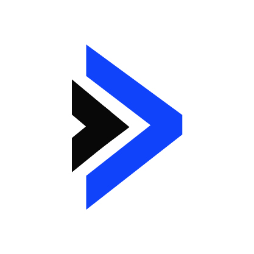

LoCoDiff is a novel long-context benchmark with several unique strengths:
- Utilizes naturally interconnected content, not artificially generated or padded context
- No junk context: every part of the context is required for the task
- Tests a real skill critical for coding agents: keeping track of the state of edited files
- Prompt generation and output evaluation are simple and easy to understand
- Challenges models' capacity to generate long-form outputs
- Surprisingly difficult for reasoning models to reason about
- Easy to procedurally generate: any file in any git repo can be made into a benchmark case
100% of the code for the LoCoDiff was written by Mentat, a coding agent developed by AbanteAI. Mentat also generated the prompts and ran the benchmark on the models, setup the github page hosting, and built this site. All benchmark code and results are on the Github repo, and you can see the Mentat agent runs here.
Chart Options
Models
Languages
Key Takeaways
Performance drops rapidly as context increases: While some models score near 100% for prompts <5k tokens, all drop significantly by 10k. All models drop to under 50% accuracy when prompts are just 25k tokens long. When we originally conceived of this benchmark, we were excited to put the million token long context limits of some models to the test, but it seems they are not yet ready for that.
Claude 3.7 Sonnet Thinking is the clear SOTA: It's the best for all context lengths and languages. We believe its ability to track the evolving state of files over long contexts is one of the reasons it makes such a strong model for coding agents.
Reasoning models, except for Sonnet do WORSE than their non-reasoning counterparts: DeepSeek's Chat v3 beats R1, Gemini 2.5 Flash Non-thinking beats Gemini 2.5 Flash Thinking, and GPT-4.1 beats o3 and o4-mini. The only exception to this trend is Sonnet 3.7 Thinking, which beats Sonnet 3.7 Non-thinking. It's unclear how reasoning models should best use their tokens to solve this task, but somehow Sonnet 3.7 uses them well.
Methodology
For each benchmark prompt, we show the model the commit history of a particular file, and ask the model to infer the exact current state of that file. This requires the model to track the state of the file as it changes, from the initial commit, diffs along various branches, and merge conflict resolutions. Accuracy is the percentage of files that matched exactly - there is no partial credit.
The exact command we use to generate the history for each file is: git log -p --cc --reverse --topo-order -- path/to/file. -p and --cc display the diffs for commits and show merge commit diffs with respect to each parent. --reverse and --topo-order make sure the commits are shown from oldest to newest, with parent commits always appearing before children. This is the cleanest, clearest way to present the history to the model.
The benchmark consists of 200 files, 40 each from 5 repos: Aider (Python), Ghostty (Zig), tldraw (TypeScript), Qdrant (Rust), and React (JavaScript). For each repo, we filtered to files modified in the last 6 months that were no longer than 12k tokens long (in their final state - what the model needs to output). We then sampled, biasing the sampling to target an even distribution of prompt lengths, with a limit of 100k.
All case prompts, expected outputs, and model answers can be explored here. A typical prompt consisting of 50k tokens can be extremely complex, containing 50-150 commits and ending up with several hundred lines to reproduce.
To quickly understand what the model sees, here is a minimal example:
Toy Example with Shopping List
A / \ B C \ / D
Commit A: Creates initial shopping list file
Commit B: Changes "apples" to "oranges", and adds new item at the end
Commit C: On a separate branch from B, changes "apples" to "bananas"
Commit D: Merges B and C branches, resolving conflict by keeping both "oranges" and "bananas"
Input: git log output for a file
> git log -p \
--cc \
--reverse \
--topo-order \
-- shopping_list.txt
commit 008db723cd371b87c8b1e3df08cec4b4672e581b
Author: Example User
Date: Wed May 7 21:12:52 2025 +0000
Initial shopping list
diff --git a/shopping_list.txt b/shopping_list.txt
new file mode 100644
index 0000000..868d98c
--- /dev/null
+++ b/shopping_list.txt
@@ -0,0 +1,6 @@
+# shopping_list.txt
+apples
+milk
+bread
+eggs
+coffee
commit b6d826ab1b332fe4ca1dc8f67a00f220a8469e48
Author: Example User
Date: Wed May 7 21:12:52 2025 +0000
Change apples to oranges and add cheese
diff --git a/shopping_list.txt b/shopping_list.txt
index 868d98c..7c335bb 100644
--- a/shopping_list.txt
+++ b/shopping_list.txt
@@ -1,6 +1,7 @@
# shopping_list.txt
-apples
+oranges
milk
bread
eggs
coffee
+cheese
commit 7f75f32283192e4f838a389c2afa8678c7e6e137
Author: Example User
Date: Wed May 7 21:12:52 2025 +0000
Change apples to bananas
diff --git a/shopping_list.txt b/shopping_list.txt
index 868d98c..2712810 100644
--- a/shopping_list.txt
+++ b/shopping_list.txt
@@ -1,5 +1,5 @@
# shopping_list.txt
-apples
+bananas
milk
bread
eggs
commit 820b839ff793e85febc07de3f639549fc5ef5181
Merge: b6d826a 7f75f32
Author: Example User
Date: Wed May 7 21:12:52 2025 +0000
Merge feature/bananas into feature/oranges
diff --cc shopping_list.txt
index 7c335bb,2712810..012208c
--- a/shopping_list.txt
+++ b/shopping_list.txt
@@@ -1,5 -1,5 +1,6 @@@
# shopping_list.txt
+oranges
+ bananas
milk
bread
eggs
Target Output: Exact final state of the file
# shopping_list.txt
oranges
bananas
milk
bread
eggs
coffee
cheese
Accuracy by Context Length Quartiles
Mentat.ai LoCoDiff Bench
| Model | Q1 (1994-20990 tokens) | Q2 (21186-35454 tokens) | Q3 (35974-59828 tokens) | Q4 (59831-97521 tokens) | Total Cost |
|---|---|---|---|---|---|
| Sonnet 3.6 | 64.00% (32/50) | 22.00% (11/50) | 6.00% (3/50) | 6.00% (3/50) | $44.01 |
| Sonnet 3.7 | 52.00% (26/50) | 38.00% (19/50) | 24.00% (12/50) | 18.00% (9/50) | $47.88 |
| Sonnet 3.7 Thinking | 🥉 74.00% (37/50) | 🥉 48.00% (24/50) | 🥉 44.00% (22/50) | 🥉 22.00% (11/50) | $70.57 |
| Sonnet 4 | 🥇 90.00% (45/50) | 🥇 74.00% (37/50) | 🥈 68.00% (34/50) | 🥈 66.00% (33/50) | $48.75 |
| Sonnet 4 Thinking | 🥈 76.00% (38/50) | 🥇 74.00% (37/50) | 🥇 70.00% (35/50) | 🥇 72.00% (36/50) | $65.89 |
| DeepSeek Chat v3-0324 | 54.00% (27/50) | 30.00% (15/50) | 14.00% (7/50) | 6.00% (3/50) | $4.53 |
| DeepSeek R1 | 50.00% (25/50) | 14.00% (7/50) | 8.00% (4/50) | 0.00% (0/50) | $8.07 |
| DeepSeek R1 0528 | 28.00% (14/50) | 12.00% (6/50) | 4.00% (2/50) | 2.00% (1/50) | $11.24 |
| Gemini 2.5 Flash | 48.00% (24/50) | 8.00% (4/50) | 18.00% (9/50) | 4.00% (2/50) | $2.12 |
| Gemini 2.5 Flash Thinking | 34.00% (17/50) | 4.00% (2/50) | 6.00% (3/50) | 0.00% (0/50) | $12.39 |
| Gemini 2.5 Pro 05-06 | 64.00% (32/50) | 38.00% (19/50) | 28.00% (14/50) | 20.00% (10/50) | $34.66 |
| Gemini 2.5 Pro 03-25 | 62.00% (31/50) | 44.00% (22/50) | 22.45% (11/49) | 20.00% (10/50) | $34.82 |
| Gemini 2.5 Pro 06-05 | 🥉 74.00% (37/50) | 38.00% (19/50) | 32.00% (16/50) | 20.00% (10/50) | $63.14 |
| Kimi K2 | 44.00% (22/50) | 10.00% (5/50) | 12.00% (6/50) | 2.00% (1/50) | $6.71 |
| GPT-4.1 | 46.00% (23/50) | 14.00% (7/50) | 14.00% (7/50) | 4.00% (2/50) | $1.22 |
| GPT-5 | 70.00% (35/50) | 30.00% (15/50) | 22.00% (11/50) | 4.00% (2/50) | $1.17 |
| GPT OSS 120B | 4.00% (2/50) | 0.00% (0/50) | 2.00% (1/50) | 0.00% (0/50) | $2.47 |
| o3 | 38.00% (19/50) | 0.00% (0/50) | 4.00% (2/50) | 2.00% (1/50) | $128.93 |
| o4-mini-medium | 28.00% (14/50) | 0.00% (0/50) | 4.00% (2/50) | 0.00% (0/50) | $10.74 |
| o4-mini-high | 22.00% (11/50) | 0.00% (0/50) | 4.00% (2/50) | 0.00% (0/50) | $26.07 |
| Horizon Alpha | 🥉 74.00% (37/50) | 40.82% (20/49) | 28.57% (14/49) | 11.11% (5/45) | $0.00 |
| Grok 3 | 64.00% (32/50) | 38.00% (19/50) | 14.00% (7/50) | 6.00% (3/50) | $37.14 |
| Grok 3 Mini | 22.00% (11/50) | 0.00% (0/50) | 2.00% (1/50) | 0.00% (0/50) | $2.98 |
| Grok 4 | 56.00% (28/50) | 18.00% (9/50) | 6.00% (3/50) | 2.00% (1/50) | $62.00 |
Accuracy by Programming Language
Mentat.ai LoCoDiff Bench
| Model | javascript (42) | python (39) | rust (39) | typescript (40) | zig (40) |
|---|---|---|---|---|---|
| Sonnet 3.6 | 21.43% (9/42) | 38.46% (15/39) | 17.95% (7/39) | 22.50% (9/40) | 22.50% (9/40) |
| Sonnet 3.7 | 40.48% (17/42) | 35.90% (14/39) | 25.64% (10/39) | 40.00% (16/40) | 22.50% (9/40) |
| Sonnet 3.7 Thinking | 47.62% (20/42) | 🥉 48.72% (19/39) | 🥉 33.33% (13/39) | 🥉 55.00% (22/40) | 50.00% (20/40) |
| Sonnet 4 | 🥇 76.19% (32/42) | 🥇 74.36% (29/39) | 🥈 56.41% (22/39) | 🥇 80.00% (32/40) | 🥇 85.00% (34/40) |
| Sonnet 4 Thinking | 🥈 71.43% (30/42) | 🥈 69.23% (27/39) | 🥇 71.79% (28/39) | 🥈 70.00% (28/40) | 🥈 82.50% (33/40) |
| DeepSeek Chat v3-0324 | 19.05% (8/42) | 28.21% (11/39) | 15.38% (6/39) | 32.50% (13/40) | 35.00% (14/40) |
| DeepSeek R1 | 16.67% (7/42) | 17.95% (7/39) | 2.56% (1/39) | 22.50% (9/40) | 30.00% (12/40) |
| DeepSeek R1 0528 | 11.90% (5/42) | 10.26% (4/39) | 2.56% (1/39) | 25.00% (10/40) | 7.50% (3/40) |
| Gemini 2.5 Flash | 23.81% (10/42) | 15.38% (6/39) | 10.26% (4/39) | 20.00% (8/40) | 27.50% (11/40) |
| Gemini 2.5 Flash Thinking | 11.90% (5/42) | 5.13% (2/39) | 5.13% (2/39) | 12.50% (5/40) | 20.00% (8/40) |
| Gemini 2.5 Pro 05-06 | 38.10% (16/42) | 30.77% (12/39) | 25.64% (10/39) | 52.50% (21/40) | 40.00% (16/40) |
| Gemini 2.5 Pro 03-25 | 35.71% (15/42) | 28.95% (11/38) | 20.51% (8/39) | 47.50% (19/40) | 52.50% (21/40) |
| Gemini 2.5 Pro 06-05 | 🥉 54.76% (23/42) | 30.77% (12/39) | 17.95% (7/39) | 45.00% (18/40) | 🥉 55.00% (22/40) |
| Kimi K2 | 21.43% (9/42) | 12.82% (5/39) | 10.26% (4/39) | 25.00% (10/40) | 15.00% (6/40) |
| GPT-4.1 | 23.81% (10/42) | 12.82% (5/39) | 2.56% (1/39) | 32.50% (13/40) | 25.00% (10/40) |
| GPT-5 | 30.95% (13/42) | 35.90% (14/39) | 20.51% (8/39) | 30.00% (12/40) | 40.00% (16/40) |
| GPT OSS 120B | 0.00% (0/42) | 2.56% (1/39) | 2.56% (1/39) | 2.50% (1/40) | 0.00% (0/40) |
| o3 | 11.90% (5/42) | 7.69% (3/39) | 2.56% (1/39) | 10.00% (4/40) | 22.50% (9/40) |
| o4-mini-medium | 14.29% (6/42) | 2.56% (1/39) | 2.56% (1/39) | 7.50% (3/40) | 12.50% (5/40) |
| o4-mini-high | 7.14% (3/42) | 2.56% (1/39) | 2.56% (1/39) | 10.00% (4/40) | 10.00% (4/40) |
| Horizon Alpha | 28.21% (11/39) | 48.65% (18/37) | 25.64% (10/39) | 43.59% (17/39) | 51.28% (20/39) |
| Grok 3 | 30.95% (13/42) | 35.90% (14/39) | 23.08% (9/39) | 40.00% (16/40) | 22.50% (9/40) |
| Grok 3 Mini | 9.52% (4/42) | 0.00% (0/39) | 2.56% (1/39) | 10.00% (4/40) | 7.50% (3/40) |
| Grok 4 | 21.43% (9/42) | 17.95% (7/39) | 12.82% (5/39) | 27.50% (11/40) | 22.50% (9/40) |